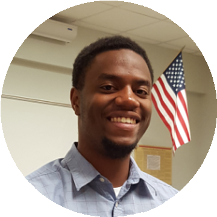

<!DOCTYPE html PUBLIC "-//W3C//DTD XHTML 1.0 Transitional//EN" "http://www.w3.org/TR/xhtml1/DTD/xhtml1-transitional.dtd">
<html xmlns="http://www.w3.org/1999/xhtml">

<!-- Mirrored from localhost/CS476CHERN/index.php by HTTrack Website Copier/3.x [XR&CO'2013], Fri, 09 Oct 2015 01:30:53 GMT -->
<head>
<meta http-equiv="Content-Type" content="text/html; charset=utf-8" />
<!--For Facebook-->

<!--content here-->
<meta property="og:url"   content="http://www.cefns.nau.edu/~ngf4/CS476CHERN/" />
<meta property="og:image" content="../../www.cefns.nau.edu/_ngf4/naurobotics/pics/CHERN.html">
<meta property="og:title" content="PHONE AND PROSIDY" />
<meta property="og:description" content="About Us" />


<!--Header-->
<style type="text/css">
<!--

-->
</style>

<!-- Mirrored from localhost/CS476CHERN/index.php by HTTrack Website Copier/3.x [XR&CO'2013], Fri, 09 Oct 2015 01:30:53 GMT -->
</html>
<html xmlns="http://www.w3.org/1999/xhtml">
<link rel="stylesheet" type="text/css" href="style.css">
</head>


	<div id="pageholdframe">
<!--content here-->

<div id="navigationBar">
	<div id="menuArea">
		<!--This is a normal menu item with no sub items-->
		<div class="menuItem">
			<span><a href="index.html" class="header">Home</a></span>
		</div>                                        
		<div class="menuItem">
			<span class="header">Projects</span>
			<!--This is a menu item with sub items-->
			<div class="menuSubItems">
				<span><a href="Current_projects.html" class="header">Current Projects</a></span><br />
				<span><a href="Future_projects.html" class="header">Future Projects</a></span><br />
				<span><a href="Past_projects.html" class="header">Past Projects</a></span><br />
			</div>
		</div>                                       
		<div class="menuItem">
			<span><a href="Meeting_times.html" class="header">Meeting Times</a></span>
		</div>
		<div class="menuItem">			
			<span><a href="About.html" class="header">About Us</a></span>
		</div>
	</div>
</div>


    <br />
    	
<!--content here-->

        <title>CHERN Team</title>
        <html xmlns="http://www.w3.org/1999/xhtml">
        <body>
		<!-- <link rel="shortcut icon" href="chern.png"> -->
        
        
        
        <center>
			<style>
			lumber{
			font-family: 'Voltaire';
			font-size: 50px;
			color: #ffffff;
			letter-spacing: 30px;
			text-transform: uppercase;
			}
			#lumbersome{
				height:auto;
				left: 172px;
				border:medium;
				margin-left: auto;
				margin-right: auto;
				background-color:#333333;
				padding:10px 10px;
				}
			</style>
			<div id="lumbersome">
			<lumber> PHONE AND PROSIDY </lumber>
			</div>
        </center>


	<div id="Content">
	
<br />
<h1>Welcome to the CHERN Homepage.</h1>
<p>Welcome, here we'll be discussing everything Prosidy and Phones</p>
<p>You are currently on main page. click on our things up top. It's all about meat right now. That will change later.</p>

<p><strong>Team:</strong></p>

<p>
  <strong>H</strong>arrison Lambeth is the team's Architect. He is tasked with creating and organizing the project's code architecture.</p>

<p><strong>T</strong>he name's Nick (Finch). I'm a Computer Science student here at NAU. I am the primary communicator through this project<br />
  More about me:<br />
  Here at NAU, I spend a good majority of my time hammering out thought provoking programs. Or Lecturing and Organizing activities for my club on the side (NAU Robotics). During my spare time I'm either programming or building/creating some circuitry for my robots other times watching videos on Youtube, mostly TedTalks or Vsauce type stuff, and expanding my knowledge of the world.</p>

<p><strong>C</strong>ameron Gaskin is the team Leader. His job is to ensure that the project keeps progressing, as well as assign duties and tasks for the other team members.</p>
<p><strong>E</strong>rik Dixon is the Recorder of this project. As a recorder, he is required to keep track of meeting decisions and discussion, as well as documents that are pertinent to the project.
<BR><BR>
Chosen Career Path: AI Development
</p>
  
<p><strong>Sponsor:</strong></p>
<p><strong>Dr. Okim Kang:</strong>
<br>Department of English
<BR>Works at Northern Arizona University
<br>Email: Okim.Kang@nau.edu
</p>
  
<p><strong>Mentor:</strong></p>
<p><strong>Ryan Middleton:</strong>
<BR>Works at Northern Arizona University
<br>Email: Ryan.M.Middleton@nau.edu
</p>
  
</div>

Last modified: October 08 2015 17:39:37.
<!--Footer-->


<!--content here-->
</div>
<center>
  <ul>
    <li><a href="index.html" class="background">Home</a></li>
	<li><a href="Meeting_times.html" class="background">Meet Us</a></li>
	<li><a href="About.html" class="background">About Us</a></li>
  </ul>
</center>


</body>
</html>


